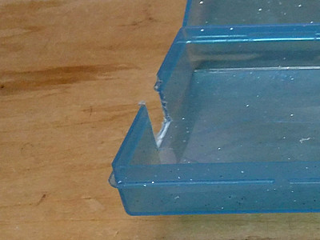
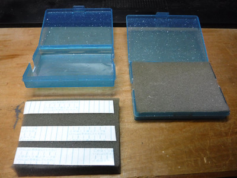
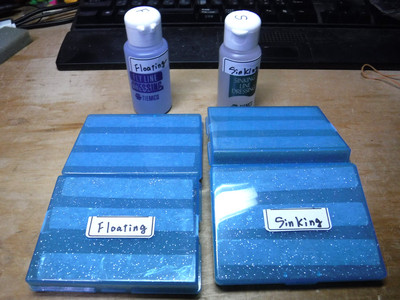

私のお気に入り
自作の道具たち フライライン・コンディショナー塗布用ケース
先日来、MaxCatch という中国のフライフィッシング用品メーカーのウェブサイトを見たり、そこの製品をあれこれ品定めするのが楽しみになってしまった。ふと、ラインワインダーを売っているのを見つけ、これはニュージーランドでお世話になった元フィッシュガイドのブリント・トロレイさんへのクリスマスプレゼントに良いかな？ と思い、またまたポチッと購入してしまった。
MaxCatch ラインワインダー（画像はメーカーサイトより引用）
そういえば、はるか昔、90年代中頃に自作した、フライライン・コンディショナーを塗布する時に使ってきたケースが相当汚れて、くたびれてしまっていることに気付いた。そこで、製品が届くのを待つ間、自分用に１セット、ブリントさんに１セット、新たに作ることにした。
昔作った時の材料は、当時勤めていた会社で、メールサーバーのデータバックアップ用に使われていた磁気テープのケースを利用した。似たような物が無いかと、百円ショップに探しに行くと、やや軟質のプラスチック製の、子供らが遊ぶトレーディングカードを入れるケースを売っていた。大きさも厚さもちょうど良いので、４個購入した。
同じ店の台所用品コーナーで、メッシュに包まれた皿洗い用スポンジ（厚さ1cmほど）を４枚百円で売っていたので１個買った。これで材料は揃った。（笑）
作成方法
- ケースにフライラインが通るスリットを作る
ケースを開き、蓋と底の双方の両サイドに、幅1cmほどの切欠きを作ります。工作用の極細ノコギリか、無ければカッターナイフでも、気長にやれば出来ます。 - スリットのバリ（表面の荒れ、キズ）をヤスリで取り除く
スリットにバリがあると、フライラインが通る時に傷みますので、丁寧に角を取り、滑らかに加工します。ヤスリも百円ショップで売っています。 - 台所用スポンジをケースの蓋・底に合う大きさにカット
スポンジから色の着いたネットを外して、定規とカッターナイフでサイズ通りの長方形にカットします。その後、両面テープでケースの蓋・底両面に貼り付けます。 - フローティング・シンキング用の区別のためにラベルを貼る
２組のケースが完成したら、F/Sの区別するため、それぞれの名称を書いたラベルを貼っておきます。

フライラインが通るスリット

スポンジをカットして貼り付けたところ

完成した２組のケース
使用方法（あえて書くほどのことでもありませんが）
- ケースの蓋と底のスポンジに、両サイドのスリットを結んだ直線上にコンディショナーを適量垂らします。
- ケースのスリットにフライラインを入れて、蓋を閉めてラインを挟みます。
- リールをロッド（バットセクションのみで可）に装着して手に持ち、ケースを膝に挟み、もう一方の手でラインワインダーを操作してラインを巻き取りながらコンディショナーを塗布します。誰か手伝ってくれる人がいるとシアワセですね。（笑）
ラインを挟んだケースを机に置き、上から厚い本などの重しを載せて保持しても良いでしょう。
2019/12/17
私のお気に入り 目次へ
サイトマップ
ホームへ
お問い合わせ